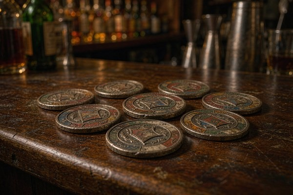
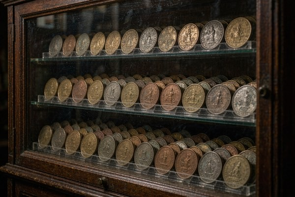

The Roman Precursor: Donatives and Legion Denarii
Start far enough back and the idea becomes unremarkable, which is exactly why it works. A commander with something worth commemorating does not write a speech. He strikes metal.
Roman commanders did this constantly. The donative was a special issue of coin or medallion distributed to soldiers to mark a victory, an anniversary, or an imperial occasion, and it was often silver or bronze, larger and more ceremonial than the ordinary change in a legionary's pouch. Denarii struck for the legions themselves carried commemorative themes too, with a reverse image chosen to say something about the issuing commander rather than about the state. The physical idea is straightforward and it is the same idea that shows up on a challenge coin a thousand seven hundred years later: an event happened, metal carries it, the metal is handed to the people who were there.
What is different, and worth saying plainly, is the direction of the exchange. A Roman donative was distributed top down, from the commander to the soldier. A challenge coin is earned bottom up, from the member who gives up a badge to the member who receives it. The Romans minted commemoratives. They did not mint membership tokens. The link between the two is a real and often cited one, but it is an analogy, not a documented line of descent, and anyone who tells you the modern coin descends directly from a legionary's donative is selling you a story rather than a fact.
What the Roman example does establish is that the object itself is old. Striking a small metal medallion to commemorate a moment and give it away is a technology with a two-millennium track record. What is new is the social function. The challenge coin is not a payment and not a prize. It is a receipt.
The WWI Story Everyone Cites (and What's Verifiable)
Here is the version most people have heard. An American pilot flying for France in the First World War is shot down and captured. The enemy searches him and finds a small medallion bearing an English inscription and his own name. He is a stranger in strange uniform, and the medallion is what convinces his captors he is an American aviator rather than a German spy, which would have meant execution. He survives, keeps the medallion, and from that day the custom of carrying an identifying coin enters military life.
That is the shape of it. The details are where it gets interesting, because the variants do not agree:
- Who struck the medallion. Some versions say the medallion was struck for the squadron by a wealthy officer or a squadron sponsor, which is the version used in most unit histories. Other versions say the pilot's family commissioned it at home, sometimes described as a silver piece with a portrait and a name, sometimes as something that simply had his name on it.
- Who found it. The captors are variously German soldiers, an Allied guard, or French troops who recognized the insignia. In one telling the pilot had already reached French lines and was nearly shot as a saboteur before the coin was produced.
- Which unit. The story has been attached to several American flying organizations, and later to the 390th Bomb Squadron, whose veterans' association did much to collect and popularize the story in the decades after the war. That collecting effort is real and well documented; whether the unit's members were the original characters in the anecdote is a separate question.
- When. The capture is variously placed in 1917 and in 1918, and the specific air service and squadron vary from telling to telling.
So what is verifiable? Honestly, less than the folklore suggests. No single document ties a named pilot, a named medallion, and a documented clemency decision together. What a historian can actually point to is the underlying custom: units issuing coins as membership markers, which was well established in American military aviation by the end of the war, and which grew out of a pre-existing practice of exchanging a badge for a coin.
And here is the part that makes the legend worth keeping. The reason this story has been repeated for a century, and the reason it keeps being repeated now, is that it is the tradition explaining itself. A challenge coin's entire purpose is to be a portable proof of who you are, produced and carried by the people it identifies. The pilot story is the tradition doing exactly that for its own origin: it says the very first coin worked because someone looked at a piece of metal and read the identity on it. Whether the pilot was real or not, the story the coin tells is the right one.
How the Tradition Spread Through the US Military
The custom did not stay in one squadron. It spread the way military customs do, downward and sideways, whenever a practice proves useful and nobody has a reason to stop it.
The aviation roots. Army aviation squadrons were the natural home for it. Aircrews had unit emblems that were already objects of fierce loyalty, they rotated constantly, and a portable token that said which squadron you belonged to solved a practical problem that ground units solved with less urgency. After the First World War the practice carried into the newly independent Air Corps and then into the Air Force.
World War II and Korea. Aviation, airborne, and Marine units all carried the habit into the next conflict. The coins became smaller, heavier, and more standardized as the manufacturing base grew, and unit designs proliferated. A pilot leaving a squadron, a paratrooper changing units, a Marine completing a deployment: each transition created a reason for a coin to change hands.
The Vietnam era, and the moment the tradition met the public. This is the hinge of the whole story. Small unit coins had been made by hand in the field for a long time, using whatever was available, and when troops came home in the late 1960s they carried them out. Then they sold them. Veterans sold coins in bars and diners across America, and the press picked the story up because it made an irresistible picture: soldiers coming home, trading scraps of metal for a drink, and civilians buying a piece of the war they had never seen. Most Americans met a challenge coin for the first time that way. It was also where the collector market started, and where the term picked up its modern meaning outside the military.

That detail matters for anyone designing a coin today. The rough, hand-made, slightly ugly coins from a Vietnam-era bar are the ones collectors actually want, and they are the reason the phrase "vintage" carries so much weight in the hobby. A flawless modern coin is a nicer object. A scratched one with a story is worth more.
The Leap Into Police, Fire, and Corporate Culture
Once the coins were visible in the civilian world, they stopped being military-only. Two decades did most of the spreading.
Police departments adopted the custom from their own veterans and ran with it. Police coin runs became an institution of their own, with designs tied to memorials for fallen officers, to department anniversaries, and to the shared experiences of specific precincts. The etiquette guide covers how police and fire coin culture differs from the military version in tone and in rules.
Fire departments did something similar, and their runs eventually became the largest single source of civilian demand. Part of that was the sheer scale of attention that first responder sacrifice received in the early 2000s, when commemorative runs for the men and women who died on September 11 became a national expression of respect. Those runs raised the profile of the whole medium, because they were ordered by hundreds of thousands of people and they were frequently bought as a personal memorial rather than as a corporate giveaway.
Corporations and sports organizations picked up the format in the 1980s and 1990s, mostly for the same reason anyone uses a coin: it outlives the event. A conference handout gets thrown away. A coin with the company logo on it ends up in a drawer, and years later somebody asks where it came from. Sales teams, milestone runs, anniversary coins for companies that no longer exist, and championship coins for leagues that keep rebranding all trace back to the same logic. The manufacturing side of how a modern run gets made, from die cutting through plating, is covered in how challenge coins are made.
The shift that mattered was not the switch from military to civilian. It was the switch from exchange to gift. In a unit, a coin is earned and passed between members. In a company run, the coin is handed down from the company to the employee. Same metal, same technique, completely different social meaning. Our guide to what a challenge coin actually is covers that distinction in more detail.
Why the 'Coin Check' Endures
Customs survive when they solve a problem that nothing else solves. The coin check is a good example, because it does something that a name badge, a handshake, and a password all fail at.
It is a physical answer. The challenged member does not say who they are. They reach into a pocket and put a piece of metal on the table, and the other person reads the emblem and knows. In a unit made up of people from thirty different states, this is a fast, non-verbal, non-bureaucratic verification.
It works across language and rank. A junior service member can produce a coin to a general and a general can produce a coin to a private. The coin is the same object on both sides of the rank gap, and it settles the question without anyone having to explain themselves.
It carries the unit, not the individual. A name proves who you are. A coin proves who you belong to, which is a stronger and more useful claim in a culture that is all about belonging. It is also why the exchange of a coin when someone leaves the unit is a ceremony rather than a transaction.
It is scarce, and that is the point. A coin only means something if not everyone has one. This is why the custom keeps its edge in a world where mass-produced merchandise is cheap, and it is the same reason collectors still care. The manufacturing details that make a coin worth holding are in the plating and finishes guide.
After more than a century, the challenge coin has absorbed everything it touched and lost almost nothing of what made it work. It began as a receipt for belonging, became a proof of survival, then a souvenir, then a collector's item, then a corporate handout, and it is still, at the end of all of that, a small metal disc that lets somebody prove who they are without saying a word. The coin size guide covers what to pick if you are ordering your own run of them.

Start Your Own Chapter of the Tradition?
Send us your unit emblem, company logo, or family crest and we will come back with a free digital proof in 12 hours, plus a recommendation on size and finish based on how the coins will actually be handed out.
Get Free QuoteFrequently Asked Questions
Where did challenge coins originate?
The practice of striking a small metal medallion to mark an occasion goes back to the Roman Republic and Empire, where commanders issued donatives to soldiers. The modern challenge coin, as an exchange between members of a unit, is generally traced to American military aviation around the end of the First World War.
Who invented the challenge coin?
No single person is documented as inventing it. The custom appears to have grown out of an existing practice in which a member gave up a badge or insignia in exchange for a coin, which happened first in aviation units and then spread across the US military in the 1920s and 1930s.
Is the World War I pilot story true?
The broad shape of the story is treated as a legend rather than a documented fact. Every retelling agrees on the essentials, that a captured American pilot was spared because a medallion identified him, but the details differ from one version to the next on the squadron, the year, the maker of the medallion, and even who found it. Historians generally accept the underlying tradition as real while treating the specific anecdote as folklore that grew around it.
What was a Roman donative?
A donative was a special issue of coin or medallion struck by a Roman commander or emperor and distributed to soldiers to mark a victory, an anniversary, or an imperial occasion. They were often silver or bronze, larger and more ceremonial than ordinary change, and the closest ancient relative of the modern commemorative challenge coin.
When did challenge coins reach the general public?
The breakthrough came at the end of the Vietnam War, when returning veterans carried home handmade coins and sold them in American towns for money to drink. The practice was widely written about in the press, which made most Americans aware of challenge coins for the first time and started the collector market.
Why did Vietnam veterans sell challenge coins?
Because the coins were the only souvenirs they could carry out of a war zone, and because many of them were made by hand with whatever materials were available. Veterans sold them as a way to raise money for the bars and shops that had fed them on the way home, and the buyers were usually civilians who had never held one before.
When did police and fire departments start making coins?
Both picked up the custom from the military during the 1960s and 1970s, and it grew steadily from there. Fire department coin runs in particular surged in the early 2000s, when the scale of public attention on first responder sacrifice turned commemorative coin orders into one of the largest sources of civilian coin demand.
How did challenge coins spread outside the military?
Two paths did most of the work. The first was veterans bringing coins home, which exposed the object to civilians during the Vietnam era. The second was the corporate and sports adoption of the custom in the 1980s and 1990s, where conference attendance, sales targets, and team milestones all became reasons to commission a run of custom coins.